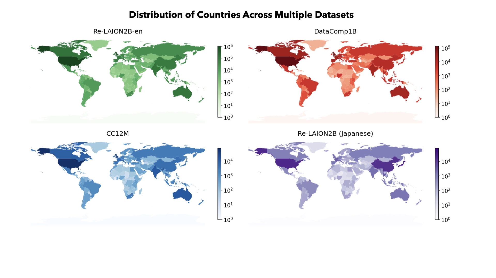

Where Do Images Come From? Analyzing Captions to Geographically Profile Datasets
Abhipsa Basu, Yugam Bahl, Kirti Bhagat, Preethi Seshadri, R. Venkatesh Babu, Danish Pruthi
In this project, we analyze where training images come from by mapping image–caption pairs to countries using location mentions in captions. Studying three widely used datasets (Re-LAION, DataComp1B, and Conceptual Captions) across 20 common visual entities, we find that a small number of high-income countries—primarily the United States, United Kingdom, and Canada—dominate the data, while many regions, especially South America and Africa, are heavily underrepresented.

Acknowledgements: This work was supported in part by the AI2050 program at Schmidt Sciences (Grant G-24-66186) and a grant from Google Research.